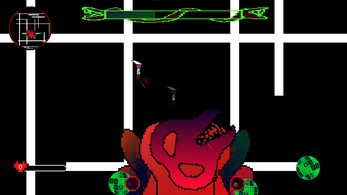
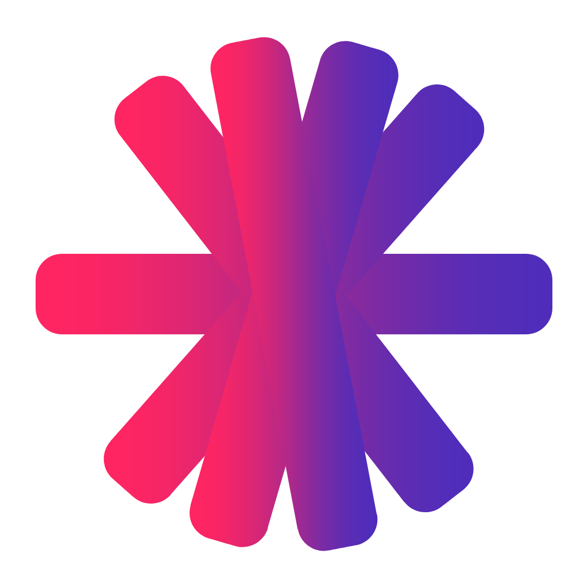

A chrome extension. This extension can be used to amplify, adjust bass, and as well as adjust treble. Have fun! Enjoy.
Dunglads
Developed and coded this awesome linear roguelike game alongside a team of 3.

JPK
Created a electron-js framework password keeper. It encrypts passwords with AES-256 encryption type and stores it and can only decrypt the password with the right key.

Youtube Watch Party
A multi-socket web application in which youtube videos are synced between people online.